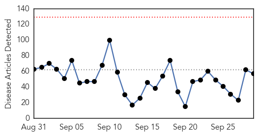
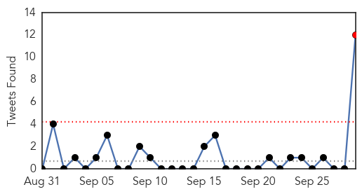
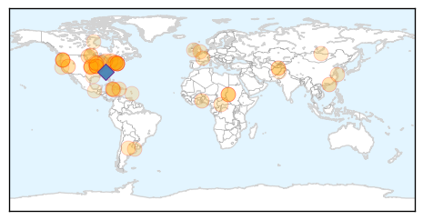
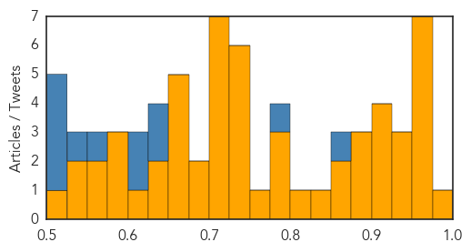

Unknown
30-Day Web Trend
0 alerts, 0 warnings

30-Day Twitter Trend
1 alerts, 0 warnings

Article Locations

Article Confidences
Top Articles:
- 0.994
- Carson City health department announces 2015 flu season community vaccination events
- 0.969
- Health officials encouraging residents to get seasonal flu vaccine
- 0.965
- Seven new Legionnaires’ cases reported in Bronx
- 0.963
- Closer Look At Risks Of Meningococcal Bacteria
- 0.960
- More than 150 Shigellosis cases reported in Kansas City this year
- 0.958
- Education Ministry monitors outbreak of Hand, Foot and Mouth disease
- 0.954
- Kansas City sees spike in Shigella infections, especially in young kids
- 0.951
- Local health departments warn residents about KC disease outbreak
- 0.941
- Flu season has arrived; doctors strongly encouraging Utahns to get vaccinated
- 0.933
- Sudan: Disease afflicts Kabkabiya children in North Darfur
- 0.926
- N.Y. officials to test South Bronx areas for Legionnaires'
- 0.922
- Disease afflicts Kabkabiya children in North Darfur - Sudan
- 0.917
- Chicago Tribune
- 0.916
- Number of Cases Rises as NYC Investigates New Legionnaires' Disease Cluster in the Bronx
- 0.909
- North Dakota Spots 22 Salmonella Cases
- 0.898
- Nain TB outbreak began months before public disclosure in wake of media questions
- 0.891
- More schools confirmed with hand, foot and mouth disease
- 0.886
- Salmonella Thompson Outbreak in North Dakota
- 0.868
- KATU.com - Portland News, Sports, Traffic Weather and Breaking News - Portland, Oregon
- 0.862
- FAO convenes meeting on Anthrax in West Africa
- 0.844
- Mid-Missouri not seeing effects from nearby infectious disease
- 0.818
- MHP Public Health Encourages Parents to Vaccinate Children Against HPV
- 0.792
- Health Advisory lifted for Clackamas Cove
- 0.789
- Health Warning For Clackamas Cove
- 0.777
- New Legionnaires' disease cluster found in NYC
- 0.761
- Serbia: Serbia Inter-Agency Operational Update 15-21 September 2015
- 0.747
- UK's Labour Party puts on show of unity despite divisions over Corbyn
- 0.741
- Central African Republic: New violence in Bangui; insecurity blocks hospital access for wounded
- 0.730
- Agencia Nacional de Noticias
- 0.730
- Agencia Nacional de Noticias
- 0.730
- Agencia Nacional de Noticias
- 0.727
- Why you can catch food poisoning from an oyster you haven't even eaten
- 0.724
- New Legionnaires’ disease outbreak in New York City sickens at least 7
- 0.723
- Cases of respiratory diseases rise among young children
- 0.717
- Education Ministry: Keep Children At Home With Symptoms Of Hand, Foot And Mouth Disease!
- 0.715
- Flu triggers ’vaccinate or mask’ rules at hospitals
- 0.713
- Every 9 Minutes, Someone in the World Dies of Rabies
- 0.709
- Two More Cases Of EEE Reported In Michigan Horses - Horse Racing News
- 0.706
- MSF treated 171 wounded people including 46 children in Kunduz - Khaama Press (KP)
- 0.694
- Flu-clinic season gets under way
- 0.688
- Untitled Article
- 0.664
- Jamaica: Jamaica calls for reparations for slavery with UK PM/ Hand, foot and mouth disease
- 0.663
- NYC Investigates New Outbreak of Legionnaires’ Disease
- 0.662
- News 6 partners with Walgreens for flu shots
- 0.660
- New Global Partnership, RHD Action, Calls on World Leaders to End Rheumatic Heart Disease
- 0.657
- Mosquito-borne encephalitis kills more horses in Southwest Michigan
- 0.637
- Doctors warn about the risks of water intoxication
- 0.636
- Bill Gates and UN say malaria could be eradicated by 2040
- 0.604
- Smokers with Healthy Lungs Have DNA Mutations
- 0.597
- Unlike U.S., Japan Government Investigating HPV Vaccine Injuries
Showing top 50 articles...
Top Tweets:
- 0.864
- t12 Fluvax can reduce flu illnesses doctors' visitsmissed work and school due to flu and prevent flu-related hospitalizations abcdrbchat
- 0.797
- .@bryanjhomy fluvax does not cause the flu. Flu vaccines are made from killed or weakened viruses; some use no viruses at all abcdrbchat
- 0.629
- T4: Anyone can get the flu and vaccination is the single best way to protect against flu virus infection. abcdrbchat
- 0.627
- T8: You won’t know if you have flu unless you get a flu test and it is positive. abcdrbchat
- 0.624
- t5 There are several flu vaccine options for the 2015-2016 flu season including a high dose vaccine for ppl 65 and older abcdrbchat
- 0.603
- T8: Flu is generally worse than a cold; symptoms like fever body aches extreme tiredness & dry cough are more common w/ flu. abcdrbchat
- 0.574
- For more flu prevention tips follow. abcdrbchat
- 0.535
- T2 Keep the flu to yourself! Help prevent the spread of flu by staying home when sick http://t.co/rVf7KDUB7H abcdrbchat
- 0.515
- .@PergamIC Vaccine effectiveness is usually approximately 50-60% when the viruses are well-matched to the vaccine virus. abcdrbchat
- 0.514
- T5: CDC flu vaccine recommendations for the 2015-16 flu season are available in http://t.co/4SgFowlwYq abcdrbchat
- 0.512
- T8: If you have the flu stay home (except to get medical care) for at least 24hrs after the fever is gone. abcdrbchat
- 0.509
- T1: People who have certain medical conditions like asthma diabetes & heart disease are at high risk of flu complications abcdrbchat
Hemmorhagic Fever
30-Day Web Trend
6 alerts, 0 warnings

30-Day Twitter Trend
0 alerts, 0 warnings

Article Locations


Article Confidences

Top Articles:
-
No articles found for Sep 29, 2015
Top Tweets:
-
No tweets found for Sep 29, 2015